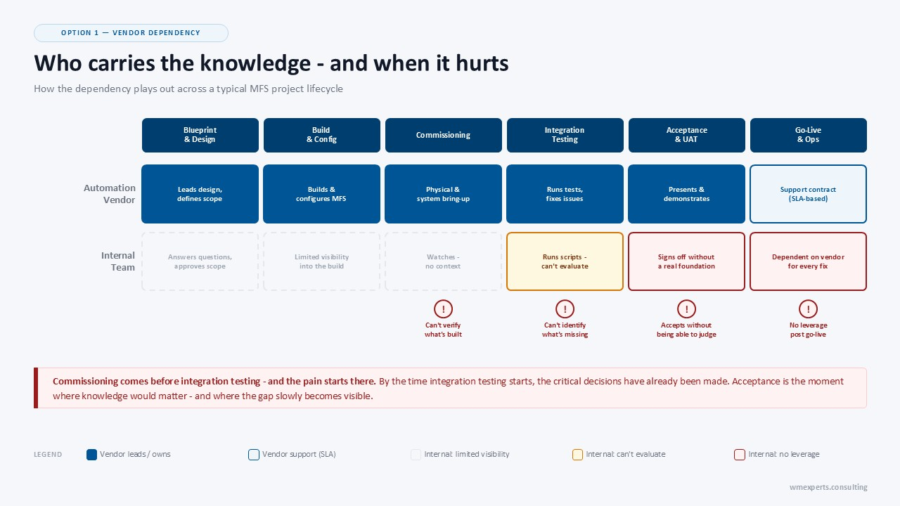
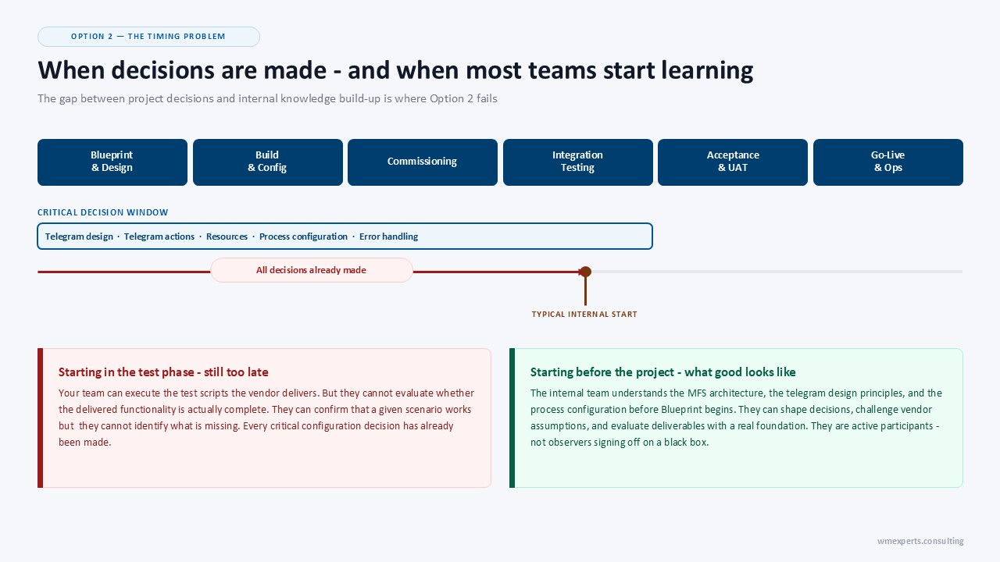
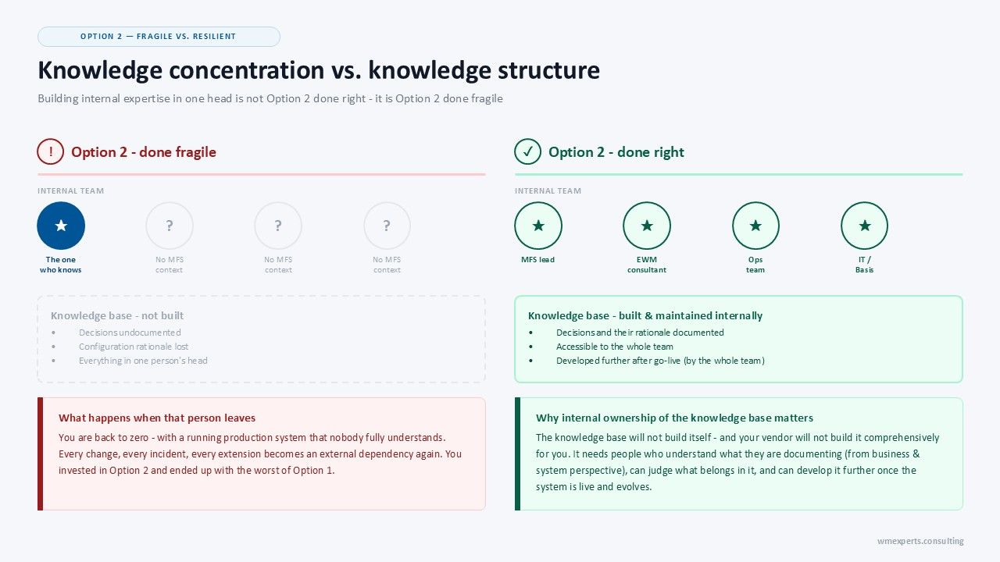
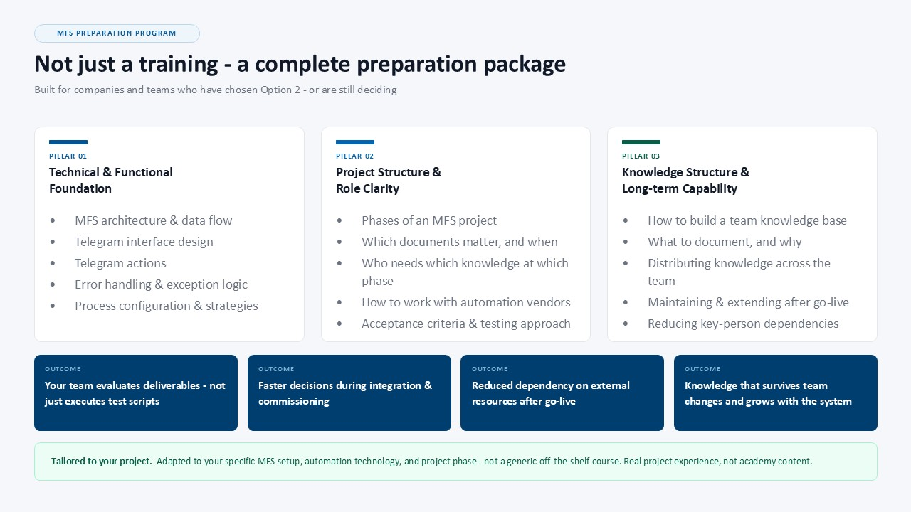

Your MFS Project: Build Internal Knowledge, or Depend on Your Vendor?
At some point in every EWM MFS project, you will find out whether your internal team was prepared or not. I think most companies find out too late.
If you are planning or running an EWM warehouse which is about to be automated, this topic is exactly for you. You have selected, or are about to select, an automation vendor. Most probably a professional one. So they will soon ask the right questions, deliver their scope, and get the system running.
For a long time within your MFS project, at least for the first part, you probably will not feel any pain. Even if nobody on your internal team really understands what is being built. But that changes at the moment you have to review and accept what was delivered.
MFS sits between two worlds: SAP EWM and physical automation. This is a pretty complex spot. Your vendor knows their side and most probably comes with experts who have delivered such solutions many times before. But when it comes to testing, accepting, and going live with the system, someone on your side needs to understand the functional and technical side of what you received.
Because if nobody does, you are not really running a project. You are signing off on a black box. It is like buying a car without having a driving license: you sign the contract by looking at the car from the outside and watching the seller drive it a few times around the block.
I think every company running an MFS project has to answer one question clearly and early: how do we handle the knowledge gap on our side? There are only two real options. Both are legitimate. But you need to decide for one of them, and you need to understand that one of them has a timing problem that kills even the best intentions.
Option 1: Vendor Collaboration and Dependency
Option one is that you rely on your implementation partner and automation vendor throughout the project, and you back that up with a solid support contract for the time after go-live. Full shift coverage for the MFS layer, clear escalation paths, defined SLAs, and realistic response times.
This is a valid business decision. Your vendor has done this before. The project moves faster because you are not waiting for internal people to get up to speed. And if you have a solid relationship, your vendor does a good job, and your warehouse processes rarely change, this can work long-term.
But you also have to be honest about the specific moment where this option becomes painful, and that moment is earlier than most people expect: joint testing. When you need to accept delivered functionality, and nobody on your team can evaluate what is in front of them, you cannot push back. You cannot catch mistakes. You are dependent, not because you chose to be, but because nobody made a different decision early enough.

That can work, but you are dependent on the relationship with your vendor and on the quality of the vendor support team. Option 2 addresses the point in time when option 1 has its weakness. But it only works if the timing and the execution are right, and most companies get at least one of the two wrong.
Option 2: Build Internal Know-how
With option two, you build internal knowledge before your project reaches the critical moments described above. The objective is that someone on your team, ideally a small group, understands EWM MFS well enough to evaluate what the vendor delivers, shape the design, ask the right questions, and later handle operational exceptions without immediately picking up the phone.
Here is where most companies fail at option 2: they start too late. Not after go-live. Most teams are smarter than that. They get involved during testing, a few weeks before the system goes live. But that is still too late.
By then, the processes are configured, the strategies are implemented, and the telegram structures and actions are defined. Your internal team can only run test cases based on step-by-step scripts delivered by your vendor. They can confirm that a given scenario works, but they can hardly identify what is missing.

The second common failure is that you build the knowledge early but only in one or two people. Those people leave. You are back to zero with a running system that nobody fully understands.
What Good Execution Looks Like
Done right, option 2 is not only about training people. It is also about building a knowledge structure that outlasts individual team members: documentation that captures not just what was configured, but why. A shared resource your whole team can access, not just the one person who was in the room when the decision was made.
But that knowledge base will not build itself, and your vendor will not build it for you in a way that becomes a comprehensive source of knowledge covering the business processes as well as the functional and technical implementation. It requires an internal team that understands what they are documenting and what needs to be fed into the knowledge base.
The people maintaining that knowledge need to assess what belongs in it from both a business and system perspective, structure it correctly, and develop it further after go-live. The knowledge base is only as good as the people maintaining it. Which brings you back to the same requirement: internal expertise, built comprehensively and early enough to matter.

Make the Decision Early
Neither option is wrong. But both require a real decision, made early and implemented consistently. Most companies make neither. They realize it during integration testing or commissioning, and then try to build internal knowledge under time pressure. They potentially end up with vendor dependency as the only choice, now in a pretty bad negotiating position. That is the worst version of both options.
If you go with option 1, define it and start negotiating early in the project. What does your support contract actually cover? What is your escalation path? What happens if the vendor relationship changes in three years, or your vendor even disappears from the market?
If you go with option 2, start before the project does. Make sure your internal team gets real exposure throughout the project, not just at the end. Identify and use the right tools to build and maintain a knowledge base. AI can help here, but it cannot replace the need for people who understand what they are looking at.
MFS Preparation as a Project Workstream
If you are a company or a team with an MFS project on the horizon, and you are thinking about going for option 2, I have built a preparation program for exactly this situation. It is based on my experience from delivering MFS projects for many years.
It is not just a technical training on MFS. It is a complete preparation package. I will be your team's partner to prepare for the project: the main part is around the functional and technical foundation your team needs, tailored to your project. In addition to this, I give you insights into the project structure and phases of an MFS implementation, which documents matter, and which people need which knowledge at which project phase.
The goal is simple: when the critical moments arrive, your team is in the room as active participants, not passive observers.

If your project is upcoming or already running, take a look at whether the timing still works for you. Visit MFS-Training.com for a detailed overview of the offering and contact options. I am looking forward to getting in touch and building a package that prepares your team for what lies ahead.
Newsletter
Get updates about new blog posts directly in your inbox.
YouTube Channel
Subscribe to my channel for regular tutorials & insights about SAP EWM.